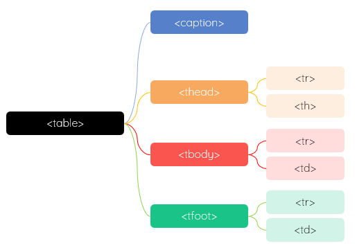

- Overview
- 展示数据
- 布局；早期使用较多，现在多使用 Div + CSS 实现
- 更多信息，请访问 MDN -
<table>、complete guide table element

表格思维导图
- 表格常见结构如下所示
<table>
<caption></caption>
<thead>
<tr>
<th></th>
</tr>
</thead>
<tbody>
<tr>
<td></td>
</tr>
</tbody>
<tfoot>
<tr>
<td></td>
</tr>
</tfoot>
<table>
- <table>
- 容器
- display 类型是 tabel，inline-block
- <caption>
- 表格的标题/题注/说明
- 如果指定，必须是表格第一个子元素
- 部分属性需要单独设置，如背景色
- 对应的CSS 样式 caption-side 默认为 top，在上部
<caption>样式
| item |
desc |
| caption-side |
top | bottom |
- <thead>
- 表格的头部
- 需手动添加
- display 类型是 table-row-group
- <tbody>
- 表格的主体
- 系统自动添加
- display 类型是 table-row-group
- <tfoot>
- 表格的尾部
- 需手动添加
- display 类型是 table-row-group
- <tr>
- 表格的行
- display 类型是 table-row，它的子元素只能是 <td> 或 <th>
- <tr> 至少有一个单元格 <td> 有数据；否则空行会被压缩
- <th>
- 单元格；通常 出现表格标题行/首行，也可以出现在任何位置
- display 类型是 table-cell
- <td>
- 单元格；表格的普通单元格
- display 类型是 table-cell
- Attribute
- 利用表格某些属性可以设置表格的基本样式
- 除了最后2个属性外，其它属性已经废弃，请使用 CSS 实现
<table>属性
| item |
desc |
| border |
边框 |
| width |
宽度 |
| height |
高度；通常由内容自动撑开 |
| cellspacing |
单元格间距 |
| cellpadding |
单元格填充 |
| align |
水平对齐；默认左对齐 |
| valign |
垂直对齐；默认居中 middle |
| colspan |
列合并（向右） |
| rowspan |
行合并（向下） |
- CSS
- width：表格宽度
- border-collapse：边框是否重叠，默认不重叠；只有指定了重叠 collapse，才可以设置行 <tr> 的边框
- border：表格边框/单元格边框；单元格分离 collapse 时，不能直接给 <tr> 指定边框，而应该给 <td> 指定边框
- border-spacing：单元格间距；边框重叠时，无效
- table-layout: 单元格内容显示方式，默认是 auto，自动适应内容；fixed 固定宽度
- empty-cells：空单元格显示与否/不在空单元格周围绘制边框。默认显示/绘制；仅仅使用于边框不重叠的情况
- CSS Initialization
- 默认情况下，表格边框不重叠；<th>、<td>有1个像素的 padding
- 系统会默认添加表体 <tbody>；表头 <thead>、表尾 <tfoot> 和 <caption> 需要手动添加
- 通常只关注行 <tr>、<th>和 <td>，他们会自动放在 <tbody>中
- 如果使用<th>，或需要对表头特别处理，如固定表头，建议采用完整结构
- <th>的样式如背景优先级略高，部分动态样式无法覆盖
- 表格的样式设计应聚焦在<td>
- 同一页面内的表格，关键列宽应该保持一致
* {
margin: 0;
padding: 0;
box-sizing: border-box;
}
table {
width: 100%;
border-collapse: collapse;
}
- <colgroup>
- 在表格内定义各列特性
- 默认情况下各列宽度会自动分配，撑开至占满表格
- 指定每列的宽度 - 内联样式
- 更多使用，请访问 MDN -
<colgroup>
<table>
<colgroup>
<col style="width: 100px;">
<col style="width: 200px;">
</colgroup>
<table>
- 也可以单独指定某个 <td>的宽度
table td:nth-child(2) {
width: 20%;
}
- 简单粗暴的设置第一列的宽度；适合页面内存在多个表格的情况
table th:first-child {
width: 30%;
}